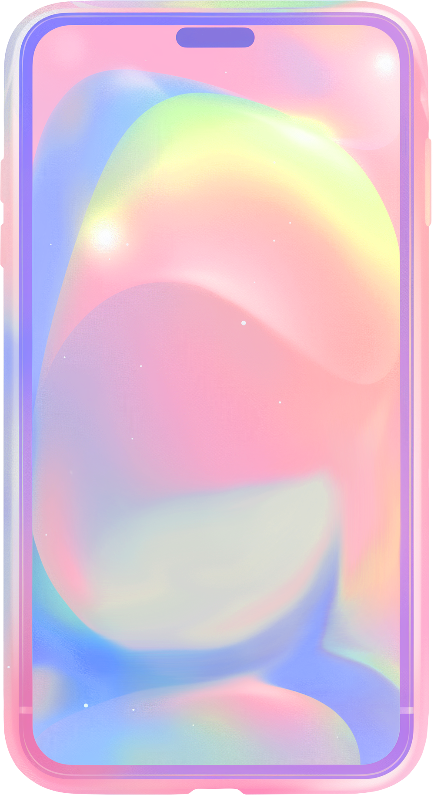
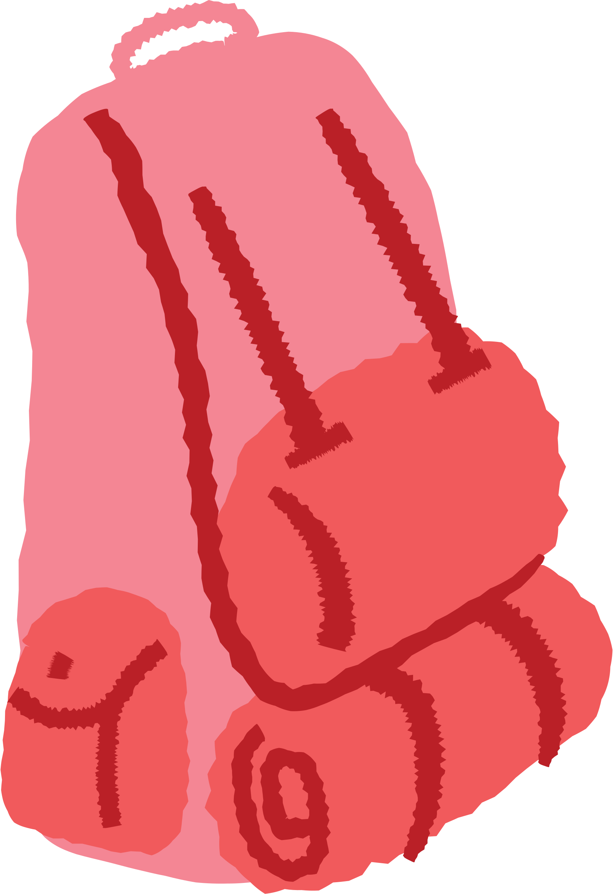

Students submit accurate details and photos of their lost belongings.
Finders report items found across campus with storage location.
Intelligent matching connects lost belongings with found items.
Original owners file a claim with non-sensitive proof of ownership.
Campus Security verifies evidence and safely returns the item.